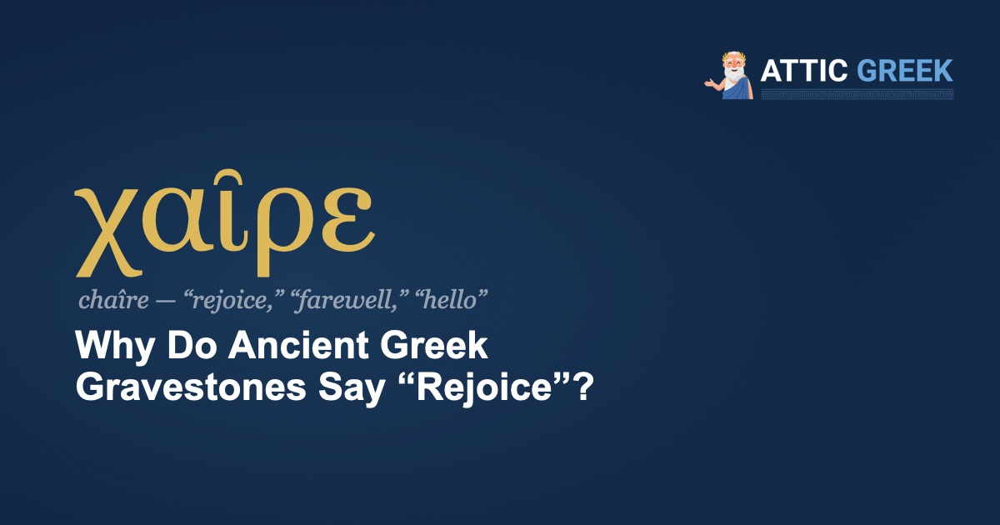

In a gallery of the National Archaeological Museum in Athens stands the grave stele of a young man. Carved around 440 BC, it shows him nude, a cloak over his shoulder, a strigil and a purse in one hand and a dog at his feet, probably an athlete. Above him, the letters cut into the stone run together in a single unbroken line, the way Greek inscriptions were usually written, with no spaces between the words:
ΑΓΑΘΟΚΛΗΧΑΙΡΕ
Grave stele from Thespiai, National Archaeological Museum, Athens (no. 742)
At first it looks like one long, impossible word. But break it in the right place and it becomes two:
Ἀγαθοκλῆ, χαῖρε.
Agathoklê, chaîre.
Agathokles, farewell.
The name is a small poem: ἀγαθός (agathós), “good,” plus κλέος (kléos), “fame,” the word Homer uses for the undying glory of heroes. Agathokles means something like “famous for goodness.” (The museum notes that the stele is a Boeotian work from Thespiai, and that the inscription was probably added later than the carving.)
Once you've seen that word, you start finding it everywhere, especially on later stones in the National Archaeological Museum and along the old road of the Kerameikos cemetery. Modern Greeks still say χαίρετε (chaírete) for “hello,” and χαίρω πολύ (chaírō polý), “I'm very glad,” when they meet you. So what is a word for gladness doing at the bottom of a grave? The short answer is that chaîre was both the first thing an ancient Greek said to you and the last.
What does χαῖρε actually mean?
Χαῖρε is the imperative of the verb χαίρω (chaírō), “I rejoice, I am glad.” Literally it is a command, be glad!, but it worked the way “hello” and “goodbye” work in English: nobody hears an order, only warmth. Add -τε and you are addressing several people (χαίρετε), and the infinitive χαίρειν opened letters, the ancient “Dear So-and-so.”
The detail that matters for gravestones is that chaîre served for arriving and for leaving. You wished someone gladness when you met them, and you wished it again as they walked away.
Where does the word come from?
Etymologists usually trace χαίρω to a Proto-Indo-European root meaning “to desire, to take pleasure in,” which would make “rejoice” a distant cousin of English yearn: one the gladness of having, the other the ache of wanting. (The link is plausible but debated.) Inside Ancient Greek the family is large: χαρά (chará), “joy”; χάρις (cháris), “grace, favor,” the root of charisma; and εὐχαριστία (eucharistía), “thankfulness,” which became the Eucharist.
Why would you tell the dead to rejoice?
Because chaîre had been a goodbye for a very long time, and the grave was simply the longest goodbye. Homer already gives the word that weight. In the Odyssey, the princess Nausicaa, who found the shipwrecked Odysseus and saved his life, speaks to him one last time before he sails home:
χαῖρε, ξεῖν᾽, ἵνα καί ποτ᾽ ἐὼν ἐν πατρίδι γαίῃ
μνήσῃ ἐμεῦ, ὅτι μοι πρώτῃ ζωάγρι᾽ ὀφέλλεις.chaîre, xeîn', hína kaí pot' eṑn en patrídi gaíēi / mnḗsēi emeû, hóti moi prṓtēi zōágri' ophélleis.
Farewell, stranger, so that even when you are in your own homeland you may remember me, since it is to me first that you owe your life.
Homer, Odyssey 8.461–462
Notice what she pairs with the farewell: remember me. That pairing is exactly what a gravestone is for.
What did Socrates hear before he died?
The most moving chaîre in Greek literature is in Plato's Phaedo, on Socrates' last day in prison in 399 BC. Toward sunset, the servant of the Eleven, the officials in charge of the prison, comes to tell him it is time to drink the hemlock, and says goodbye:
χαῖρέ τε καὶ πειρῶ ὡς ῥᾷστα φέρειν τὰ ἀναγκαῖα.
chaîré te kaì peirō hōs rhâista phérein tà anankaîa.
Farewell, and try to bear what must be as easily as you can.
Plato, Phaedo 116c–d
He bursts into tears and turns away. Socrates looks up at him and answers:
καὶ σύ, χαῖρε.
kaì sý, chaîre.
And you, farewell.
Plato, Phaedo 116d
A man about to die answers with a wish for the other person's gladness. If you want to understand why the word belongs on a grave, start here.
Do all ancient Greek gravestones end with χαῖρε?
No, and the exceptions explain the pattern. The famous Athenian grave reliefs of the 5th and 4th centuries BC are spare: a name, a father's name in the genitive (“of So-and-so”), sometimes the deme. The stele of Hegeso in the National Archaeological Museum gives only ΗΓΗΣΩ ΠΡΟΞΕΝΟ, Hēgēsṑ Proxénou, “Hegeso, [daughter] of Proxenos.” The farewell is in the carving instead: the handshake scenes archaeologists call dexiosis, the living and the dead clasping hands in silence.
Then things change. In the late 4th century BC, Athens restricted lavish funeral monuments (Cicero, On the Laws 2.64–66, credits Demetrius of Phalerum with the law). The great sculpted reliefs stop, gravestones get plainer and more numerous in the Hellenistic and Roman periods, and that's when chaîre spreads, often with an adjective:
χρηστὲ χαῖρε
chrēstè chaîre
Good one, farewell; or, more loosely, farewell, dear and decent soul.
Even the stele of Agathokles fits: carved around 440 BC, but with an inscription the museum believes was added later. When you notice chaîre again and again on your museum walk, you are noticing a change in fashion over time.
How can you read χαῖρε on a museum wall yourself?
You need surprisingly little. Find the name, usually on the top line in capitals and often without spaces. Scan the last line for ΧΑΙΡΕ: the Χ is a breathy kh in the Attic Greek of Plato's day (Modern Greek gives it the ch of Scottish loch). If an adjective like ΧΡΗΣΤΕ comes just before it, that -ε ending is the vocative, the form used to address someone directly. That's all it takes for the walls of the Kerameikos to stop being rows of anonymous marble and become a long series of greetings.
A last word
There's something fitting about a culture whose final word to the dead was a wish for gladness, and whose first word to a stranger was the same. Thousands of ordinary Athenians had it carved under their names so that strangers they would never meet might say it back. Next time you pass one of those stones, read it aloud.
Χαῖρε.
Read the words on the stone
Attic Greek teaches Ancient Greek from the alphabet up — 210 structured lessons, quizzes, flashcards, and annotated readings from Homer, Plato, and the great classical authors, with Socrates himself as your guide.
Start with 5 free lessons →Five lessons and the opening of the Odyssey, free forever. Then $4.99/month or $34.99/year.